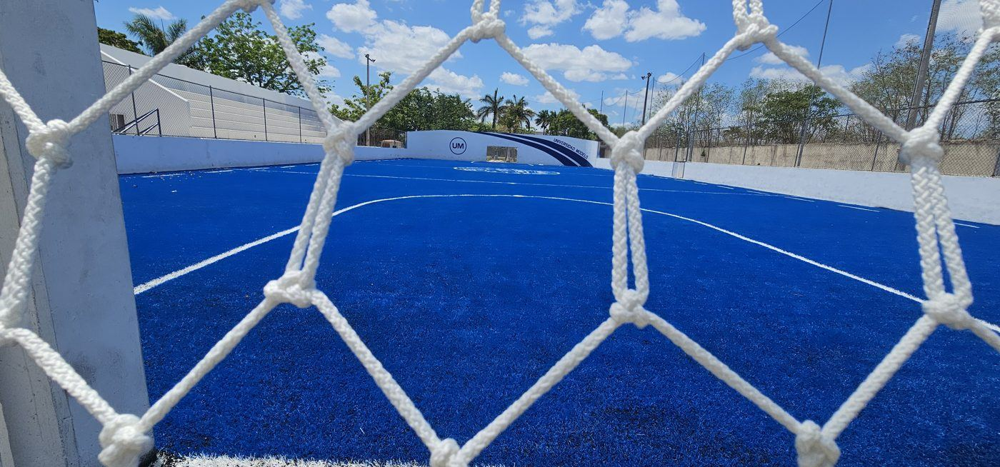
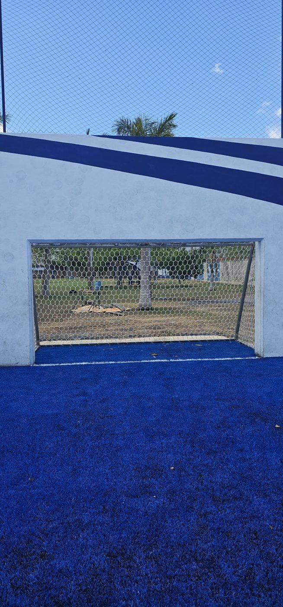
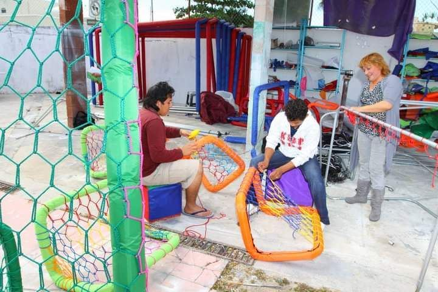
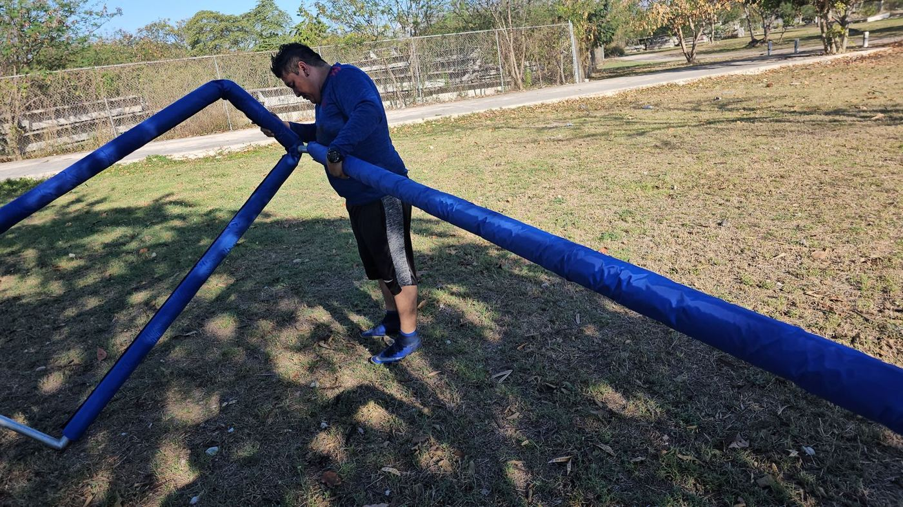

“Quiero una red para portería como la de la foto.” En Grupo RC recibimos este mensaje muy seguido. La foto nos ayuda a reconocer la forma de la portería, pero no nos dice sus medidas.
Antes de cotizar una red conviene distinguir tres cosas: la medida reglamentaria de la portería, la medida real de tu estructura y la medida de confección de la red.
Medida reglamentaria y medida comercial
La medida reglamentaria es la que fija el reglamento de una competencia. Las medidas interiores son el espacio libre entre los postes y la altura desde el suelo hasta la parte inferior del travesaño.
La medida comercial es la referencia con la que se vende una portería o una red. En las redes también cuentan el tejido, la confección y el ajuste sobre la estructura; por eso hay que decir siempre qué se está midiendo.
Medidas de una portería de fútbol por modalidad
| Modalidad | Ancho × alto | Cómo leer la medida |
|---|---|---|
| Fútbol 11 | 7.32 × 2.44 m | Medida interior de las Reglas de Juego de IFAB. |
| Fútbol 7 | 6 × 2 m o 5 × 2 m | 6 × 2 m es la norma del CSD de España; en México depende de cada liga. |
| Fútbol rápido | 4 × 2 m o 4 × 1.80 m | Medidas comerciales que más nos piden; confirma el reglamento de tu liga. |
| Futsal o fútbol sala | 3 × 2 m | Medida reglamentaria de referencia. |
| Fútbol playa | 5.50 × 2.20 m | Medida interior que fija FIFA. |
| Fútbol 5 comercial | Medir la estructura | El nombre no garantiza que se usen porterías de futsal. |
Medidas de una portería de fútbol profesional (fútbol 11)
Las Reglas de Juego de IFAB fijan 7.32 m de ancho interior por 2.44 m de alto, medido hasta la parte inferior del travesaño.
En Grupo RC manejamos una medida comercial de red de 7.50 × 2.50 m, la que más nos piden para estas porterías. Eso no convierte en reglamentaria a una portería con esa abertura: es una medida de confección que ajustamos a la estructura.

Medidas de una portería de fútbol 7: ¿5 o 6 metros de ancho?
En las canchas de fútbol 7 que atendemos nos piden redes de 5 × 2 m y de 6 × 2 m; manejamos las dos. Que sirvan para competir depende del reglamento de la liga.
Como referencia, el Consejo Superior de Deportes de España establece porterías de 6 × 2 m para fútbol 7, pero eso no aplica automáticamente a las ligas de México. Para torneos, confirma con el organizador; para cambiar una red, mide la portería que ya tienes.
Medidas de portería de fútbol rápido, futsal y fútbol 5
En fútbol rápido las medidas que más nos piden son 4 × 2 m y 4 × 1.80 m. Cada liga puede tener su reglamento, así que verificamos las medidas reales antes de fabricar.
En futsal la referencia es 3 × 2 m. En “fútbol 5” comercial no siempre se usan porterías de futsal: mide la estructura.
Porterías para Microbios en Yucatán
En Mérida existe la categoría infantil Microbios dentro de las ligas deportivas municipales; la edad se consulta en la convocatoria de cada temporada. Para este uso manejamos un modelo comercial de 3.20 × 1.80 m. Es una referencia de nuestro catálogo, no una medida reglamentaria; si tu liga usa otra, hacemos la red a la medida.

Para cotizar necesitamos cuatro medidas
- Ancho.
- Alto.
- Profundidad superior: del frente al soporte de atrás, en la parte alta.
- Profundidad inferior: del frente al fondo, a nivel del suelo.
Las escribimos en ese orden: ancho × alto × profundidad superior × profundidad inferior. Una red de 6 × 2 × 0.70 × 1.20 m mide 6 m de ancho, 2 m de alto, 70 cm de fondo arriba y 1.20 m abajo.
¿Por qué fabricamos en múltiplos de 10 cm?
En nuestras redes hexagonales cada hexágono mide alrededor de 10 cm, según cómo se acomode y se tense. Por eso cotizamos y confeccionamos en incrementos de 10 cm: si una medida queda en medio, redondeamos hacia arriba y ajustamos la red a la portería. Por ejemplo, una profundidad de 1.25 m se cotiza como 1.30 m.
Es nuestro criterio de fabricación, no una medida oficial. Mándanos la medida real aunque no sea múltiplo de 10 cm.

Fondo inclinado o tipo cajón
Fondo inclinado es una red más corta arriba que abajo. Algunos ejemplos que fabricamos:
| Modelo | Fondo superior | Fondo inferior |
|---|---|---|
| Microbios y modelos pequeños | 0.50 m | 1.00 m |
| Fútbol 7 (la más pedida) | 0.70 m | 1.20 m |
Tipo cajón o cabaña es la que tiene la misma profundidad arriba y abajo; por ejemplo, 7.50 × 2.50 × 2.50 × 2.50 m. Son configuraciones comerciales de RC; la forma final depende de los soportes de tu portería.
¿Existe una profundidad reglamentaria?
Depende de la modalidad y del reglamento de cada liga. Cuando se puede elegir, recomendamos una profundidad inferior de al menos 1 m y no mayor que la altura de la portería. Revisamos también el cierre de abajo: la profundidad sola no evita que el balón salga por un hueco.
Si vas a fabricar la portería, considera el tubo
En algunas de nuestras porterías de fútbol 7 y mayores usamos tubo galvanizado de 3 pulgadas; en los modelos Microbios, tubo de 1⅝ pulgadas. Además del diámetro cuentan el espesor de pared, las uniones y la estabilidad.
Respeta el espacio interior: la medida exterior del marco no es la abertura de juego. En fútbol 11, IFAB exige que las porterías, incluidas las portátiles, estén aseguradas al suelo para que no se vuelquen.

¿Qué mandarnos para cotizar tu red?
- Ancho y alto, diciendo si mediste por dentro o por fuera.
- Profundidad superior e inferior.
- Fotos de frente, de costado y de los soportes.
- Cuántas redes: una o el par.
- El reglamento de tu liga, si tienes que cumplir una medida.
Somos fabricantes y adaptamos la confección a tu portería. Mándanos las medidas reales y te ayudamos a elegir la forma y el ajuste. ¿Cada cuánto cambiarla? Lo explico en ¿cuánto dura una red para portería?
Referencias técnicas
- IFAB, Reglas de Juego: Regla 1, medidas de la portería y aseguramiento al suelo.
- Consejo Superior de Deportes (España): norma técnica de fútbol 7.
- FIFA: Reglas de fútbol playa 2025-26.
- Ayuntamiento de Mérida: ligas deportivas municipales.
Las medidas comerciales y los criterios de confección corresponden a la experiencia de fabricación de Grupo RC. Para competir, verifica el reglamento vigente de tu liga.